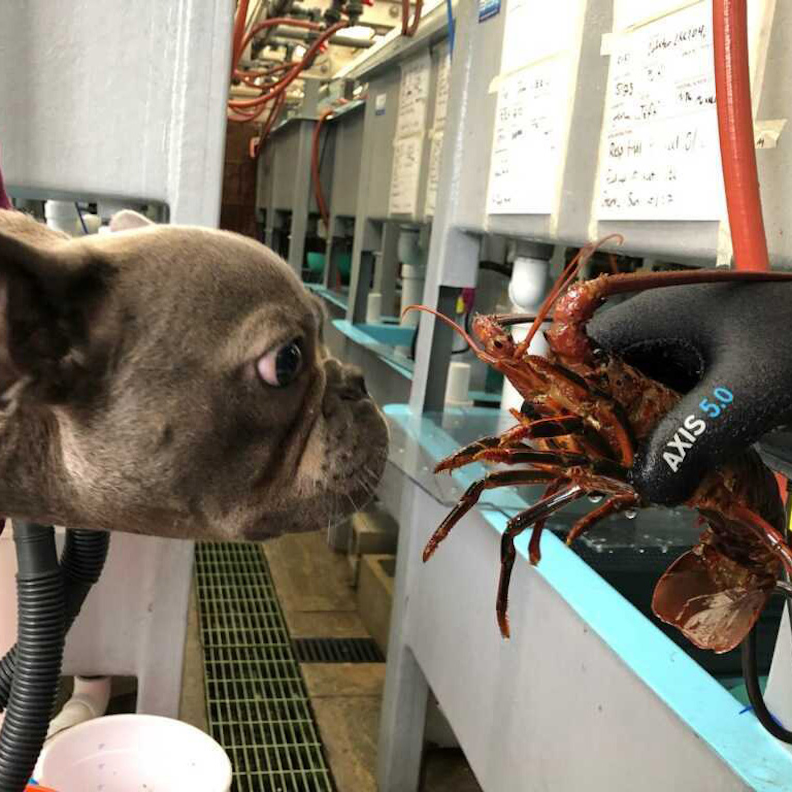
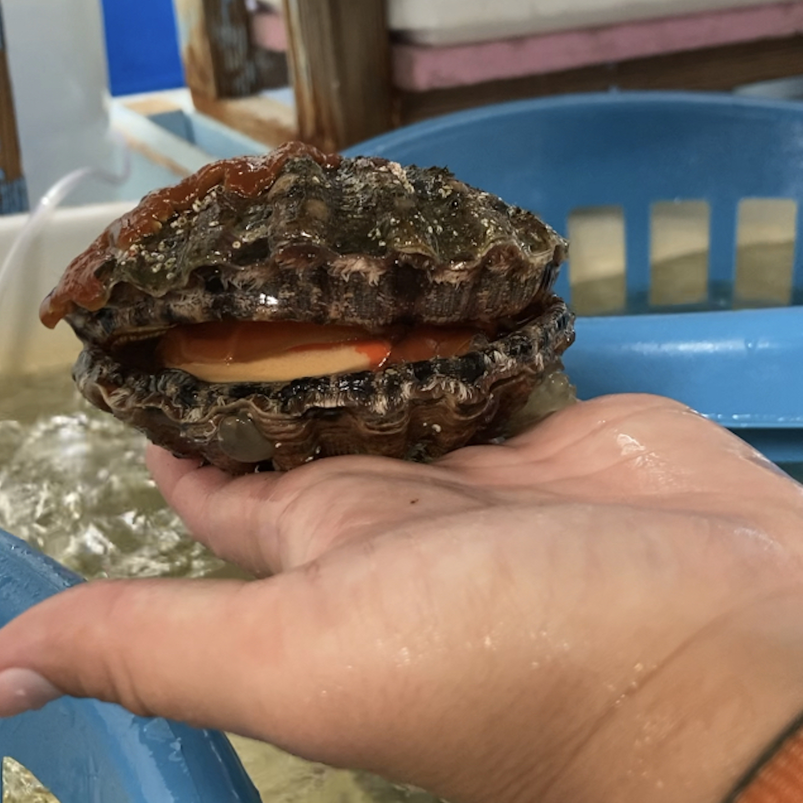

I have had the privelage of assisting some amazing people in their research on all sorts of critters from Mano de León scallops to California Spiny lobster and more!


Relevant publications:
Mechanisms of cardiac thermal tolerance in fish (led by Dr. Gail Schwieterman)
- Gail D. Schwieterman; Emily A. Hardison; Georgina K. Cox; Jacey Van Wert; Kim Birnie-Gauvin; Erika J. Eliason. Mechanisms of cardiac collapse at high temperature in a marine teleost (Girella nigrians). Comparative Physiology and Biochemistry Part A.
Temperature and size on Barred Surfperch (led by Dr. Krista Kraskura)
- Krista Kraskura, Emily A. Hardison, Erika J. Eliason. Body size and temperature affect metabolic and cardiac thermal tolerance in fish. In revision at Scientific Reports.
Temperature on Lobsters (led by Samantha Csik)
- Samantha R. Csik, Bartholomew P. DiFiore, Krista Kraskura, Emily A. Hardison, Joseph S. Curtis, Erika J. Eliason, and Adrian C. Stier (2023). The metabolic underpinnings of temperature-dependent predation in a key marine predator. Frontiers in Marine Science.
Tumor Immunology in mice (led by members of the Krummel lab at UCSF)
Mikhail Binnewies+, Adriana M. Mujal+, Joshua L. Pollack, Alexis J. Combes, Emily A. Hardison, Megan K. Ruhland, Kevin C. Barry, Patrick Ha, Vincent Chan, Edward W. Roberts, Matthew F. Krummel. (2019) Unleashing Type-2 Dendritic Cells to Drive Protective Antitumor CD4+ T Cell Immunity. Cell.
Matthew F. Krummel, Jagdish N. Mahale, Lion F. K. Uhl, Emily A. Hardison, Adriana M. Mujal, Julie M. Mazet, Robert J. Weber, Zev J. Gartner, and Audrey Gérard (2018). Paracrine costimulation of IFN-γ signaling by integrins modulates CD8 T cell differentiation. Proceedings of the National Academy of Sciences.